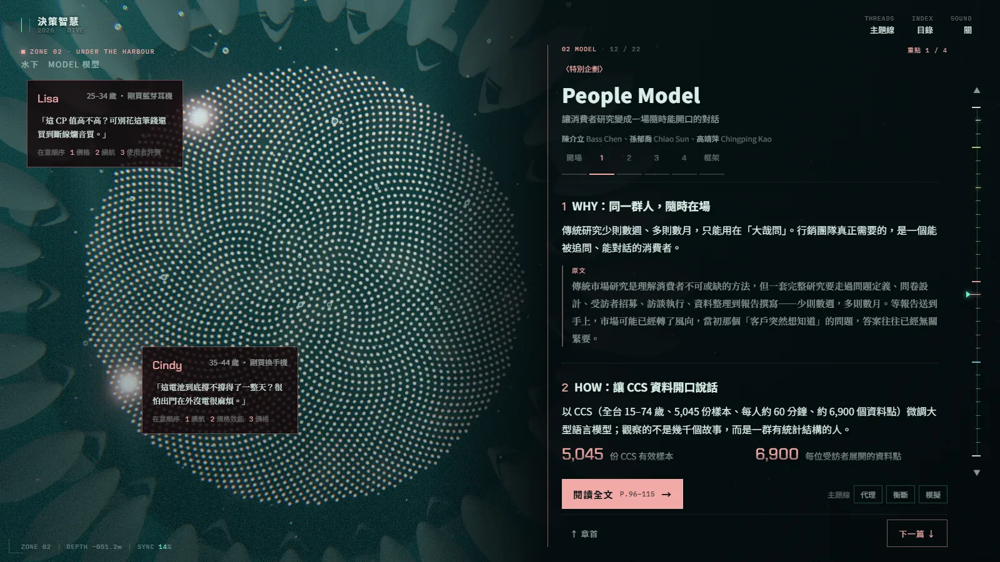
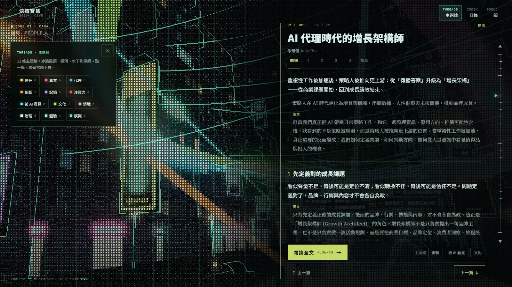
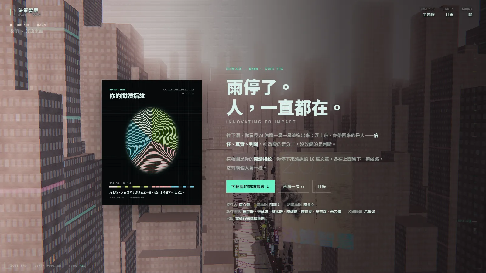
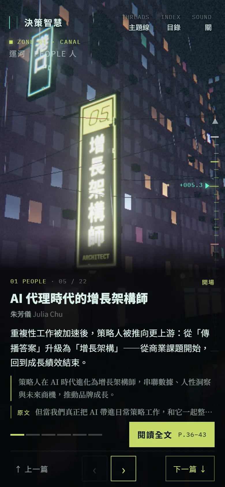
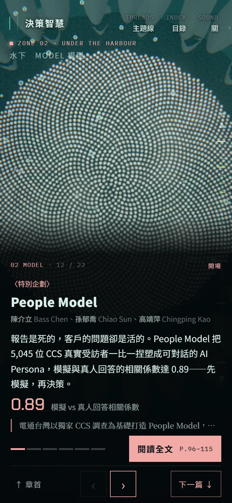

DIVE
AI 越強，人在哪裡？
《2026 決策智慧》的互動閱讀版。196 頁、22 篇文章，依章節排在四個深度：屋頂、運河、水下、深網。
讀者打開刊物後，
常常讀不完
- 入口：196 頁、22 篇，不知道從哪裡開始，也不知道讀到哪裡。
- 中斷：互動網站多半要點連結、另開一頁，才能讀到文章。
- 孤立：讀完一篇，看不到它和其他篇的關係。
目標：讀者不用離開畫面，就能讀完一篇，再接到下一篇。
把四個章節排成
一條往下的路線
- 從哪裡開始：封面只有一個主按鈕「潛入」。之後滾動一次前進一站，一篇文章一站；不會自動前進。
- 讀到哪裡：深度就是章節。右側的深度計一格一站，讀過的文章會亮；右上角「目錄」列出 22 篇，點任一篇直接前往。
- 結尾：走完回到水面，顯示這次讀了哪些篇。
- +94 m屋頂 序章第 01–02 篇
- 0 m運河 People 人第 03–11 篇
- −72 m水下 Model 模型第 12–16 篇
- −330 m深網 A.I 行動第 17–22 篇
- ↑回到水面 黎明閱讀紀錄
數字是深度，單位公尺，以運河水面為 0。和作品封面上的標示相同。
到站後，
直接在畫面上讀
- 每篇分六段：開場、重點 1–4、框架。
- 摘要和原文分開標示：每段上面是摘要，下面標「原文」的是書中段落（寬螢幕每段都有；手機上收合或省略）。原文共 189 段、約 2.3 萬字，由程式逐字複製，不改寫。
- 閱讀全文：可翻原書頁面，196 頁都有。
- 操作：滑鼠在文字上滾動是讀本篇，在場景上滾動是到下一站。
場景依文章內容設計
- 數字：22 篇裡有 13 篇，各選一個數字放進場景，例如招牌上的 89%、70%、47 秒。其餘 9 篇不放數字。
- 第 12 篇 People Model：5,045 顆種子代表 5,045 位受訪者；讀到重點 1、2、3 時，畫面各切換一次。
- 第 17–22 篇：每篇讓大理石頭像多出一個部位。
- 正確性：標題、作者、頁碼、引文對照原書；結尾列出版權頁全部名單。

12 條主題線，
和閱讀紀錄
- 主題線：信任、真實、代理、衡斷等 12 個主題，每一條都跨章節。電腦上，每篇文字下方列出它的主題線：點一條，看同主題的其他篇，再點就前往。按住空白鍵，或按右上角「主題線」，看全部。
- 閱讀指紋：結尾依讀過的文章產生一張圖，可以下載。讀的篇目不同，圖就不同。


手機、鍵盤、內建顯示卡
都能使用
- 手機：文字固定在下方，一次顯示一段；上下滑換篇，左右滑換段。以瀏覽器模擬手機尺寸測試，還沒有用實體手機測。
- 鍵盤：方向鍵換篇、換段，可以從頭讀到尾。系統開了「減少動態」時，部分動態會變小、變慢。
- 效能：開場編譯全部著色器（實測 45 個），之後不再編譯；偵測到內建顯示卡會自動降低畫質。在 Intel UHD 620 筆電上開發與測試。
- 聲音：由程式即時合成，沒有音檔；瀏覽器禁止自動播放時，封面顯示提示。


里程碑
工具：Claude Code（Claude Opus 5.5、Claude Fable 5.2）。用中、英文對話下指令，程式由 AI 撰寫。大的改動先請 AI 提計畫，實作後看截圖回饋，再請另一組 AI 找問題、查證。
-
01
第一版：一路往下潛
屋頂、運河、水下、深網，22 篇文章各一站。上線到 GitHub Pages，換上原書書封。
-
02
手機導覽重做
一次滑動走一站。深網在直式螢幕另設鏡頭。
-
03
大理石頭像
深網的頭像換成 Poly Haven 的大理石胸像（CC0）。介面用字改用書中的原話。
-
04
到站就讀
現在每到一個地方就是點連結開文章
先做第 14 篇示範，修正後推到 22 篇。每段加原文：AI 選段落編號，程式照編號逐字複製。 -
05
文字區加寬、點擊回饋
panel 可以大一點嗎，畢竟還是想讓大家多看文章內容
最寬 440 → 640；調小雨聲，封面聲音淡入。 -
06
名單、聯絡頁、資安審查
結尾列出版權頁全部名單；依最終版更正聯絡頁；分 4 個方向做資安審查並修正。
純靜態網站，放在 GitHub Pages
作品只有 HTML、CSS、JavaScript 和圖片，不需要伺服器，也沒有建置步驟：線上的檔案和公開 repo 完全相同。平台強制 HTTPS，任何人不用登入就能打開。
沒有的東西
- 沒有後端、資料庫、登入、表單、Cookie。
- 沒有分析或追蹤碼；不蒐集任何使用者資料。
- DIVE 不在瀏覽器裡存任何東西。「閱讀指紋」只在讀者自己的瀏覽器裡畫出來，下載到自己的電腦。
檢查過的項目
- 公開的全部提交紀錄和文字檔：沒有金鑰、密碼、設定檔、本機路徑。
- 沒有客戶資料；目前檔案的人名都來自原書，另有 CC0 模型作者的署名。
- DIVE 網址參數只做比對或限制範圍，不寫進頁面；沒有 eval；不上傳任何資料。
- 沒放進這個 repo 的版本和原書 PDF，對應網址都是 404。
- 檢查後修正：移除一個可以關掉弱顯卡保護的測試用網址參數。
已知限制
- three.js 從 jsDelivr 載入（固定 0.170.0 版），沒有完整性檢查；連不上時作品無法啟動。字型來自 Google Fonts。這兩家會看到訪客的 IP。
- DIVE 沒有設 CSP；GitHub Pages 不能自訂回應標頭，網站可以被嵌入。沒有登入、沒有可被冒用的操作，影響有限。
- 原始碼是公開的，提交紀錄帶有提交者本人的公司信箱。
- 聯絡頁依最終版更正過一次；更正前的那張圖仍在 repo 的歷史紀錄裡。
做法：請 AI 分四個方向審查（金鑰與個資、瀏覽器端程式、第三方與隱私、上線設定），再由另一組逐項查證。範圍是這個 repo 與網站。
DIVE
作品bass-ccc.github.io/decision-intelligence-2026/shell/
原始碼github.com/bass-ccc/decision-intelligence-2026
謝謝。